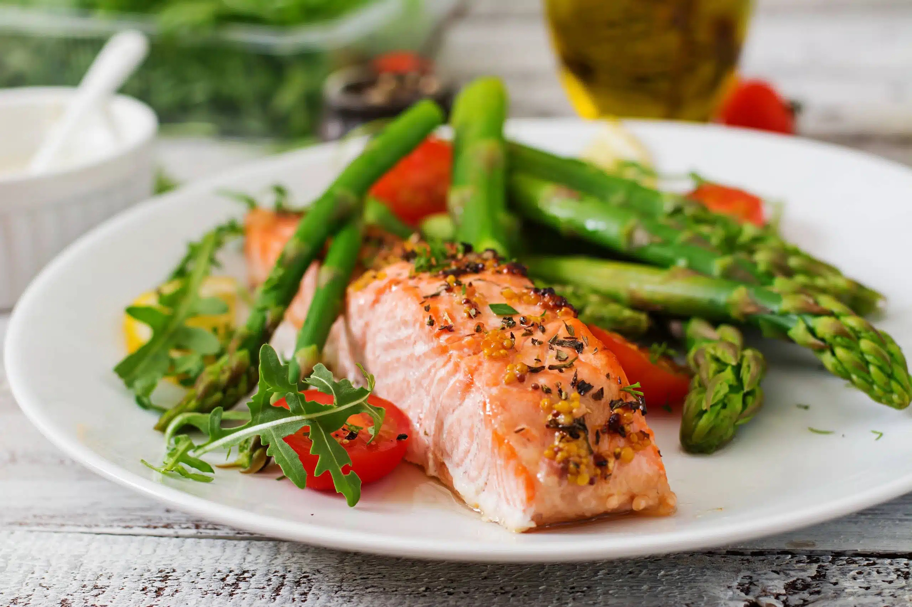

Salmón al horno con verduras
 CenaPreparación
- Precalienta el horno a 200°C (392°F).
- Lava todas las verduras. Corta el calabacín y el pimiento en rodajas o trozos medianos. Corta la cebolla en cuartos. Pela y pica finamente los ajos.
- En una bandeja para horno, coloca todas las verduras y agrégales el ajo picado, la mitad del aceite de oliva, sal y pimienta. Mezcla bien para que todas las verduras queden cubiertas.
- Hornea las verduras durante 10 minutos.
- Mientras tanto, seca el filete de salmón con papel de cocina y sazona con sal y pimienta.
- En un tazón pequeño, mezcla el aceite de oliva restante con el jugo de limón, el romero y el tomillo.
- Retira la bandeja del horno, coloca el filete de salmón sobre las verduras y vierte la mezcla de hierbas sobre el pescado.
- Vuelve a meter la bandeja en el horno y hornea durante 12-15 minutos más, o hasta que el salmón esté cocido pero jugoso.
- Sirve el salmón inmediatamente con las verduras asadas a un lado.